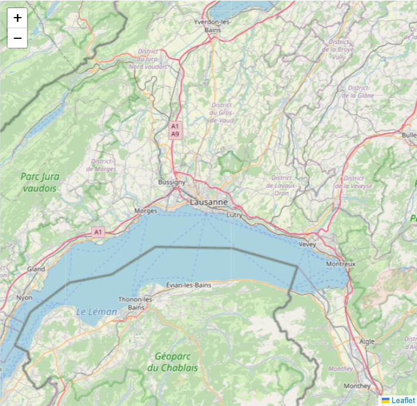

Bienvenue, Retrouvez les sites de l'UNESCO
Bienvenue sur notre site dédié à la découverte des sites classés au patrimoine mondial de l'UNESCO ! Explorez le monde à travers notre carte interactive et plongez dans la richesse culturelle et naturelle de ces lieux emblématiques. Que vous soyez un voyageur passionné, un étudiant curieux ou simplement un amoureux de la diversité de notre planète, notre plateforme vous offre un accès facile et intuitif à une multitude de destinations fascinantes. Grâce à notre interface conviviale, vous pouvez naviguer librement sur la carte pour découvrir les sites classés par l'UNESCO, qu'il s'agisse de monuments historiques, de sites naturels remarquables, de villes anciennes ou de paysages culturels exceptionnels. Chaque point sur la carte est une invitation à l'émerveillement et à la découverte, avec des informations détaillées sur l'histoire, la signification et les caractéristiques uniques de chaque site. Que vous planifiiez un voyage autour du monde, que vous recherchiez de l'inspiration pour votre prochaine aventure ou que vous souhaitiez simplement en apprendre davantage sur les trésors de notre planète, notre site est votre compagnon idéal. Rejoignez-nous dans cette exploration passionnante des merveilles de l'humanité et de la nature, toutes réunies en un seul endroit pour votre plus grand plaisir. Embarquez dès maintenant pour un voyage inoubliable à travers les sites du patrimoine mondial de l'UNESCO !
